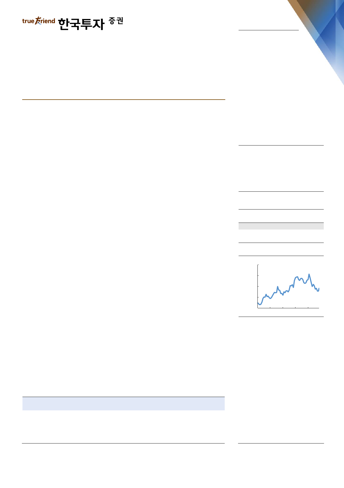

기업 Note
2019. 7. 17
S-Oil(010950)
2Q19 Preview: 과거보다는 미래
매수(유지)
목표주가: 137,000원(유지)
6월 유가 급락이 2분기 실적 하향 요인
2분기 실적은 적자 전환될 전망이다. 이를 반영해 2019년 영업이익 추정치를 16%
하향했다. 원인은 6월 유가 급락이다. Dubai 기준 4~5월 평균 70달러/배럴을 기
록했던 유가는 6월 평균 62달러/배럴로 8달러/배럴 급락했다. 이로 인해 실적을
좌우하는 한달 후행 정제마진이 4~5월 평균 5.4달러/배럴에서 6월 -3.6달러/배
럴로 급격하게 축소되었다. 또한 3월 평균 대비 6월 평균 유가가 5달러/배럴 하락
해 재고평가손실도 840억원 발생할 전망이다. 유가하락에 따른 재고평가손실과
기존 추정치 대비 1.5달러/배럴 낮은 한달 후행 정제마진을 반영, 2분기 정유사업
부 실적전망을 영업이익 590억원에서 영업적자 1,420억원으로 하향했다.
실적을 좌우하는 선행지표는 이미 급반등
그러나 7월 현재까지 평균 스팟과 한달 후행 정제마진은 7.5달러/배럴, 10.7달러/
배럴로 2분기 평균 대비 각각 82%, 328% 확대되었다. 작년 4분기부터 올해 상
반기까지 역사적 저점으로 아시아 정제마진을 하락시킨 확대된 Dubai-WTI 간극
이(원가경쟁력 훼손) 6월 중순 이후 축소되었기 때문이다. 정유제품 수급은 타이
트하다(2019/7/1 ‘하반기 반등을 기다리자’ 참고). 비정상적으로 확대된 유종간
간극이 아시아 정제마진의 약세원인이었고 이는 중국이 미국원유 수입을 10월부
터 중단했기 때문에 발생했다. 중국은 미국의 이란산 원유수출 제재 이후 4월부터
점진적으로 미국산 원유 수입을 재개하며 간극은 축소되었다. 특히, 하반기와 내년
에는 Dubai가 WTI 대비 더욱 저렴해지며 원가경쟁력 우위를 점할 가능성도 배제
할 수 없다. 미국 원유수출 파이프라인 완공과 국제해사기구(IMO)의 선박용 원료
황 규제 모두 상대적 관점에서 WTI 강세, Dubai 약세 요인이기 때문이다.
Stock Data
KOSPI(7/15)
2,082
주가(7/15)
92,400
시가총액(십억원)
10,403
발행주식수(백만)
113
52주 최고/최저가(원)
137,500/80,300
일평균거래대금(6개월, 백만원)
29,965
유동주식비율/외국인지분율(%)
주요주주(%)
Aramco Overseas
Company BV 외 11 인
국민연금공단
36.5/78.6
63.5
6.1
주가상승률
절대주가(%)
KOSPI 대비(%p)
1개월
11.1
11.7
6개월
(4.4)
(3.7)
12개월
(15.6)
(5.7)
주가추이
(원)
166,000
132,000
98,000
64,000
30,000
Aug-14Aug-15Aug-16Aug-17Aug-18
자료: FnGuide
정제마진 중장기적으로 우상향
매수 투자의견과 목표주가를 유지한다. 유가 급락에 따른 부진한 2분기 실적보다
주가와 실적의 선행지표인 아시아 스팟 정제마진의 방향성이 더욱 중요하기 때문
이다. 최근 시장은 급격히 상승한 정제마진의 지속 가능성을 지켜보는 듯하다.
`
2017A
2018A
2019F
2020F
2021F
매출액 영업이익 순이익
EPS 증감률 EBITDA PER EV/EBITDA PBR ROE DY
(십억원) (십억원) (십억원)
(원)
(%) (십억원) (x)
(x) (x) (%) (%)
20,891 1,373 1,246 10,706
3.4 1,667 10.9
9.7 2.0 18.8 5.0
25,463
639
258 2,216 (79.3)
994 44.1
17.1 1.8 3.9 0.8
24,149 1,061
568 4,876 120.1 1,597 18.9
9.5 1.5 8.4 2.2
24,470 3,222 2,276 19,532 300.5 3,763 4.7
3.5 1.2 28.6 9.9
24,237 3,530 2,504 21,492 10.0 4,076 4.3
2.8 1.0 26.0 9.9
주: 순이익, EPS 등은 지배주주지분 기준
이도연
daniel.dy.lee@truefriend.com